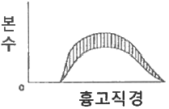
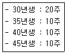
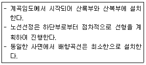
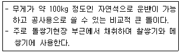

산림산업기사 (2019-04-27 기출문제)
1과목: 조림학
1. 묘간거리 4m로 정방형 식재를 할 때 1ha당 식재 본수는?
- 63본
- 250본
- 625본
- 2500본
(정답률: 75%)

2. 수목에서 수분 통로 및 지탱의 역할을 하는 조직은?
- 밀선
- 목부
- 사부
- 유조직
(정답률: 85%)
3. 1/2묘에 대한 설명으로 옳은 것은?
- 뿌리의 나이가 1년이고 줄기의 나이가 2년인 삽목묘이다.
- 뿌리의 나이가 2년이고 줄기의 나이가 1년인 삽목묘이다.
- 파종상에서 1년, 그 뒤 한 번 상체되어 1년을 지낸 2년생 실생묘이다.
- 파종상에서 1년, 그 뒤 한 번 상체되어 2년을 지낸 3년생 실생묘이다.
(정답률: 71%)
4. 아래 그림에 해당되는 Hawley의 간벌 양식은? (단, 모두 동령림이며 빗금은 간벌 대상임)

- 하층간벌
- 수관간벌
- 택벌식 간벌
- 기계적 간벌
(정답률: 79%)
5. 밤나무 재배환경에 대한 설명으로 옳지 않은 것은?
- 토양산도가 pH5.0~5.5인 곳이 좋다.
- 해발 고도가 400m 이상인 고산지역이 좋다.
- 재배 적지의 토성은 사질양토나 양토가 좋다.
- 경사도 25° 미만의 완경사지에서 생육이 좋다.
(정답률: 78%)
6. 수목에서 양료의 이동에 대한 설명으로 옳지 않은 것은?
- 질소, 인, 칼륨 등은 이동이 쉬운 원소들이다.
- 이동이 쉽게 이루어지지 않는 원소는 칼슘, 철, 붕소 등이 있다.
- 이동성이 좋은 양료는 결핍 현상이 어린잎에서 먼저 나타난다.
- 어떤 원소의 이동성이란 용해도와 사부조직으로 들어갈 수 있는 용이성을 의미한다.
(정답률: 75%)
7. 종자의 실중에 대한 설명으로 옳은 것은?
- 소립종자는 1000립씩 4회 반복한 평균 무게이다.
- 소립종자는 10000립씩 4회 반복한 평균 무게이다.
- 대립종자는 1000립씩 4회 반복한 평균 무게이다.
- 대립종자는 10000립씩 4회 반복한 평균 무게이다.
(정답률: 74%)
8. 입목이 주로 종자로 양성된 임형은?
- 교림
- 왜림
- 중림
- 죽림
(정답률: 81%)
9. 장령림에서 동해를 예방하기 위해 비료 주기를 피해야 하는 시기는?
- 늦가을에서 초봄
- 늦봄에서 초여름
- 늦여름에서 초가을
- 늦가을에서 초겨울
(정답률: 57%)
10. 입선법으로 종자를 선별하는 것이 가장 효과적인 수종은?
- Thuja orientalis
- Pinus densiflora
- Taxus cuspidata
- Juglans mandshurica
(정답률: 68%)
11. 가래나무와 호두나무에 대한 설명으로 옳지 않은 것은?
- 자웅이주이다.
- 9월경에 결실한다.
- 4~5월에 개화한다.
- 열매는 핵과에 속한다.
(정답률: 69%)
12. 풀베기 시기로 가장 적합한 것은?
- 3월~5월
- 6월~8월
- 9월~11월
- 12월~3월
(정답률: 86%)
13. 왜림작업 적용이 가능한 가장 용이한 수종은?
- 소나무
- 잣나무
- 굴참나무
- 일본잎갈나무
(정답률: 63%)
14. 가지치기에 대한 설명으로 옳지 않은 것은?
- 생장 휴지기에 수목의 수액 유동 시작 직전에 실시한다.
- 옹이가 없고 통직한 완만재를 생산할 목적으로 실시한다.
- 참나무류와 포플러나무류는 으뜸가지 이상의 가지만 잘라준다.
- 너무밤나무, 가문비나무의 생가지치기 작업은 부후의 위험성이 있어 원칙적으로 제거만 실시한다.
(정답률: 70%)
15. 묘목의 가식 방법으로 옳지 않은 것은?
- 묘목을 삼기 전 일시적으로 도랑을 파서 그 안에 뿌리를 묻어 건조를 방지한다.
- 단시일 가식하고자 할 때에는 묘목을 다발채로 비스듬히 누여서 뿌리를 묻는다.
- 장기간 가식하고자 할 때에는 묘목을 다발에서 풀어 도랑에 세우고 묻은 후 관수한다.
- 한풍해가 우려되는 경우에는 묘목의 정단부가 바람과 같은 방향으로 되도록 누여서 묻는다.
(정답률: 77%)
16. 부숙마찰법에 의하여 탈종시키는 수종으로만 올바르게 나열한 것은?
- 밤나무, 참나무, 옻나무
- 잣나무, 호두나무, 비자나무
- 느릅나무, 단풍나무, 물푸레나무
- 싸리나무, 주엽나무, 아까시나무
(정답률: 69%)
17. 전형적인 이령림 작업에 속하는 갱신 작업종은?
- 개벌작업
- 모수작업
- 산벌작업
- 택벌작업
(정답률: 71%)
18. 수목의 뿌리가 이용 가능한 토양수분은?
- 결합수
- 중력수
- 범람수
- 모세관수
(정답률: 87%)
19. 중력이 작용하는 방향으로 수목이 생장한다는 의미에 해당하는 것은?
- 굴지성
- 주지성
- 주광성
- 굴광성
(정답률: 82%)
20. 천연갱신과 인공조림에 대한 설명으로 옳지 않은 것은?
- 천연갱신으로 조성된 숲에서 생산된 목재는 균일하다.
- 천연갱신은 새로운 숲이 조성되기까지 오랜 세월을 필요로 한다.
- 천연갱신은 그 곳의 환경에 잘 적응된 나무들로 구성되고 갱신 비용이 적게 드는 것이 장점이다.
- 인공조림은 좋은 씨앗으로 묘목을 길러 식재하고 무육에 힘써 좋은 목재를 생산한다는 것이 장점이다.
(정답률: 86%)
2과목: 산림보호학
21. 묘포장에서 뿌리혹선충 방제 방법으로 옳지 않은 것은?
- 침엽수는 돌려짓기를 한다.
- 활엽수는 이어짓기를 한다.
- 살선충제로 토양을 소독한다.
- 농작물을 재배했던 포지는 이용하지 않는다.
(정답률: 68%)
22. 해충 방제와 관련하여 경제적 가해수준에 대한 설명으로 옳은 것은?
- 수목이 피해를 입을 때의 해충의 밀도
- 일반적 환경조건 하에서의 해충의 밀도
- 방제가 가능한 단위면적당 해충의 밀도
- 해충에 의한 피해비용과 방제비용이 같을 때의 해충의 밀도
(정답률: 74%)
23. 번데기로 월동하는 해충은?
- 매미나방
- 밤나무혹벌
- 어스렝이나방
- 미국흰불나방
(정답률: 79%)
24. 오리나무잎벌레의 생활사에 대한 설명으로 옳은 것은?
- 알로 월동하고 줄기에 산란한다.
- 유충으로 월동하고 잎에 산란한다.
- 성충으로 월동하고 잎에 산란한다.
- 번데기로 월동하고 줄기에 산란한다.
(정답률: 66%)
25. 식물바이러스에 대한 설명으로 옳지 않은 것은?
- 전신 감염이 되는 경우가 많다.
- 인공 배지에서 배양이 가능하다.
- 광학 현미경으로는 관찰이 매우 어렵다.
- 영양번식 및 접목에 의하여 전염될 수 있다.
(정답률: 69%)
26. 빨아먹는 입틀을 가진 해충은?
- 메뚜기
- 흰개미
- 노린재
- 딱정벌레
(정답률: 79%)
27. 석회 보르도액으로 방제 효과가 가장 미비한 수목병은?
- 소나무 잎녹병
- 밤나무 흰가루병
- 낙엽송 잎떨링병
- 삼나무 붉은머름병
(정답률: 47%)
28. 천공성 해충이 아닌 것은?
- 소나무좀
- 박쥐나방
- 매미나방
- 알락하늘소
(정답률: 61%)
29. 수목병 방제를 위한 방법이 다른 것은?
- 악제 살포
- 임지 정리 작업
- 건전 묘목 육성
- 적절한 수확 및 벌채
(정답률: 76%)
30. 급격한 저온에 따른 수목 조직의 수축 및 팽창으로 줄기가 갈라지는 현상은?
- 만상
- 상렬
- 상주
- 조상
(정답률: 79%)
31. 감수성 식물에 대한 설명으로 옳은 것은?
- 병원체에 이미 감염된 식물
- 병원체에 감염될 가능성이 없는 식물
- 병원체에 의해 가해 받을 수 있는 식물
- 병원체에 감염되었으나 견디어 내는 식물
(정답률: 75%)
32. 볕데기에 의한 수목피해 예방법으로 옳은 것은?
- 해가림, 볏짚깔기 또는 흙깔기 등을 하여 지표의 고온화를 완화시킨다.
- 모래 등을 섞어 토질을 개량하거나 배수처리를 하여 토양수분을 감소시킨다.
- 토양의 온도를 낮추기 위한 관수나 해가림, 또는 토양피복처리를 하는 것이 좋다.
- 고립목의 줄기를 짚으로 둘러주거나 석회유 등을 발라 직사광선을 막아주는 것이다.
(정답률: 74%)
33. 대추나무 빗자루병 방제에 가장 효과적인 약제는?
- 페니실린
- 보르도액
- 석회황합제
- 옥시테트라사이클린
(정답률: 85%)
34. 화학적 해충 방제 방법에 대한 설명으로 옳지 않은 것은?
- 적용 범위가 넓다.
- 효과가 신속하고 정확하다.
- 특정 곤충의 돌발발생을 예방할 수 있다.
- 살충제에 대한 저항성이 나타나기도 한다.
(정답률: 73%)
35. 기주교대를 하는 병원균은?
- 향나무 녹병균
- 밤나무 흰가루병균
- 소나무 모잘록병균
- 벚나무 빗자루병균
(정답률: 70%)
36. 솔잎혹파리 방제 방법으로 옳지 않은 것은?
- 아세타미프리드 액제로 나무주사한다.
- 나무에 볏짚을 감아 월동 유충을 포살한다.
- 밀생 임분은 간벌하고 불량치수 및 피압목을 제거한다.
- 기생성 천적인 혹파리살이먹좀벌을 대량 사육하여 방사한다.
(정답률: 57%)
37. 잣나무 털녹병균이 중간기주에서 형성하지 않는 포자는?
- 녹포자
- 여름포자
- 겨울포자
- 담자포자
(정답률: 50%)
38. 산불 발생 및 위험이 가장 높은 시기는?
- 봄
- 여름
- 가을
- 겨울
(정답률: 76%)
39. 식물 뿌리ㆍ줄기ㆍ잎을 통하여 식물체 내로 들어가 식물의 즙액과 함께 식물 전체에 퍼져 식물을 가해하는 해충에 작용하는 살충제는?
- 제충제
- 접촉살충제
- 소화중독제
- 침투성 살충제
(정답률: 78%)
40. 생물적 해충 방제 방법으로 옳은 것은?
- Bt제를 이용하여 방제한다.
- 식재할 때에 내충성 품종을 선정한다.
- 임목밀도를 조절하여 건전한 임분을 육성한다.
- 생리활성물질인 키틴합성억제제를 이용하여 산림해충을 방제한다.
(정답률: 65%)
3과목: 임업경영학
41. 산림경영 지도원칙 중 경제원칙에 해당하지 않는 것은?
- 공공성의 원칙
- 수익성의 원칙
- 생산성의 원칙
- 합자연성의 원칙
(정답률: 62%)
42. 회귀년과 관련된 작업종은?
- 개벌작업
- 모수작업
- 택벌작업
- 왜림작업
(정답률: 66%)
43. 전국 단위의 산림계획에 따라 관할지역의 특수성을 고려하여 수립하는 산림경영계획은?
- 지역산림계획
- 산림기본계획
- 국유림경영계획
- 국유림종합계획
(정답률: 73%)
44. 임지의 지위를 사정하는데 주로 사용하는 방법은?
- 수고에 의한 방법
- 재적에 의한 방법
- 토양인자에 의한 방법
- 지피식물에 의한 방법
(정답률: 64%)
45. 임분이 처음 성립하여 생장하는 과정에 있어서 어느 성숙기에 도달하는 계획상의 연수는?
- 벌기령
- 벌채령
- 윤벌령
- 회귀령
(정답률: 74%)
46. 일반적으로 적용하는 침엽수의 조재율은?
- 0.1~0.3
- 0.4~0.6
- 0.6~0.9
- 1.0~1.1
(정답률: 67%)
47. 20년 전의 재적이 100m3이고 현재 재적이 150m3일 때 프레슬러 공식을 적용하여 재적생장률을 구하면?
- 1%
- 2%
- 3%
- 4%
(정답률: 55%)
48. 취득 원가가 20만원인 기계톱의 내용년수가 5년이고 폐기 시 잔존가치가 5만원일 때, 정액법에 의한 연간 감가상각비는?
- 1만원
- 2만원
- 3만원
- 4만원
(정답률: 76%)
49. 수목의 직경과 수고 측정이 모두 가능한 기구는?
- 섹타포크
- 덴트로미터
- 아브네이레블
- 스피겔릴라스코프
(정답률: 67%)
50. 손익분기점 분석에 설정하는 가정으로 옳지 않은 것은?
- 재고는 없다.
- 제품 단위당 비용은 일정하다.
- 제품의 생산능률은 변함이 없다.
- 제품의 판매가는 생산량에 따라 변한다.
(정답률: 71%)
51. 임업경영 분석에 대한 설명으로 옳지 않은 것은?
- 임업소득은 임업조수익에서 임업경영비를 뺀 값이다.
- 임가소득은 임업소득, 농업소득, 기타소득을 더한 값이다.
- 임업의존도는 임가소득을 임업소득으로 나누어 100을 곱한 값이다.
- 임업소득율은 임업소득에서 임업조수익을 나누어 100을 곱한 값이다.
(정답률: 61%)
52. 임업의 기술적 특성이 아닌 것은?
- 생산 기간이 대단히 길다.
- 임목의 성숙기가 일정하지 않다.
- 자연 조건의 영향을 많이 받는다.
- 임업 노동은 계절적 제약을 크게 받지 않는다.
(정답률: 64%)
53. 임업 이율을 분류할 때 용도에 따른 이율은?
- 경영이율
- 장기이율
- 평정이율
- 대부이율
(정답률: 50%)
54. 산림평가와 관계있는 임업경영요소가 아닌 것은?
- 수익
- 비용
- 임업 기술
- 임업 이율
(정답률: 75%)
55. 농지의 주변이나 둑, 농지와의 경계선 등지에 유실수, 특용수, 속성수 등을 식재하여 임업수입의 조기화를 도모하는 복합임업경영 형태에 해당하는 것은?
- 혼농임업
- 농지임업
- 비임지임업
- 부산물임업
(정답률: 69%)
56. 자산을 획득하기 위하여 제공한 경제적 가치의 측정치는?
- 손익
- 수익
- 비용
- 원가
(정답률: 56%)
57. Huber 식의 약 1.0⑤3배 과대치를 주고 중앙단면적이 원이 아닐 때 오차가 더 커지는 구적식은?
- 5분주법
- 호퍼스법
- 브레레튼법
- 스크리브너 로그 롤
(정답률: 71%)
58. 산림조사 결과 다음과 같을 때 평균임령은?

- 35년
- 36년
- 37.5년
- 38년
(정답률: 62%)
59. 현제 거래되고 있는 임지의 시가로써 평가하려는 임지와 조건이 유사한 다른 임지의 실제 거래가격을 비교하여 결정하는 평가방법은?
- 임지비용가
- 임지매매가
- 임지기망가
- 임지사정가
(정답률: 69%)
60. 유령림의 임목평가 방식으로 알맞은 것은?
- Glaser식
- 임목비용가법
- 시장가역산법
- 임목기망가법
(정답률: 72%)
4과목: 산림공학
61. 해안사방에 주로 사용되는 공사는?
- 조공
- 기슭막이
- 속도랑내기
- 정사울세우기
(정답률: 74%)
62. 야계사방에 있어서 합리식에 의한 유량을 산정하는 주요 인자가 아닌 것은?
- 유역면적
- 조도계수
- 유출계수
- 일정기간 동안의 강우 강도
(정답률: 58%)
63. 비탈다듬기 및 단끊기 시공과정에서 생기는 토사를 유치ㆍ고정하는 공사는?
- 조공
- 비탈덮기
- 누구막이
- 땅속흙막이
(정답률: 69%)
64. 집재용 도구가 아닌 것은?
- 피비
- 펄프훅
- 마세티
- 파이크폴
(정답률: 67%)
65. 와이어로프의 폐기 기준으로 옳지 않은 것은?
- 현저하게 변형된 것
- 꼬임 상태가 발생한 것
- 와이어로프 소선이 1/100 이상 절단된 것
- 마모에 의한 직경 감소가 공칭 직경의 7%를 초과하는 것
(정답률: 70%)
66. 임도의 설계속도는 20km/h, 외쪽기울기가 3%, 타이어의 마찰계수는 0.1일 때 최소곡선 반지름은?
- 약 12.3m
- 약 17.5m
- 약 23.6m
- 약 24.2m
(정답률: 44%)
67. 임도 시작점의 표고가 100m, 도착점의 표고는 500m인 산지에 종단기울기 6%인 임도를 직선으로 시공할 경우 임도의 길이는?
- 1.7km
- 4.0km
- 6.7km
- 8.3km
(정답률: 52%)
68. 상단면적 120m2, 하단면적 200m2, 상하단의 거리가 12m인 경우 평균단면적법에 의한 토사량(m3)은?
- 192
- 384
- 1,920
- 3,840
(정답률: 64%)
69. 많은 토사와 오물을 포함한 유수로 인해 배수관이나 속도랑이 막히는 것을 방지하기 위한 임도의 구조물은?
- 겉도랑
- 빗물받이
- 돌림수로
- 횡단배수구
(정답률: 53%)
70. 산사태와 땅밀림을 비교하여 설명한 것으로 옳지 않은 것은?
- 산사태는 지하수에 의한 영향이 크다.
- 산사태는 땅밀림에 비해 규모가 작다.
- 땅밀림은 계속적으로 재발 가능성이 크다.
- 산사태는 사질토로 된 지점에서 많이 발생한다.
(정답률: 60%)
71. 다음 설명에 해당되는 임도는?

- 사면임도
- 능선임도
- 순환임도
- 산정임도
(정답률: 58%)
72. 다음 설명에 해당하는 석재는?

- 호박돌
- 야면석
- 막깬돌
- 견치돌
(정답률: 59%)
73. 임도의 교량 및 암거 설치 시에 고려하여야 하는 활하중의 무게 기준은?
- DB-10 이상
- DB-13.5 이상
- DB-18 이상
- DB-32.45 이상
(정답률: 67%)
74. 사방댐의 주요 기능 및 설치 목적이 아닌 것은?
- 계상기울기를 완화한다.
- 토사의 이동을 방지한다.
- 산각을 고정하여 붕괴를 방지한다.
- 황폐계류의 유심 방향을 변경한다.
(정답률: 71%)
75. 벌도 작업의 안전을 위하여 다른 근로자가 들어오면 안되는 최소 작업 범위는?
- 벌도 대상목 수고의 0.5배
- 벌도 대상목 수고의 1.5배
- 벌도 대상목 수고의 2.5배
- 벌도 대상목 수고의 3.5배
(정답률: 75%)
76. 임도설계 시 임시기표, 교각점, 측점번호 및 사유토지의 지번별 경계, 구조물 및 곡선제원 등을 기입하는 도면은?
- 평면도
- 구조도
- 종단면도
- 횡단면도
(정답률: 64%)
77. 중력에 의한 침식으로만 올바르게 나열한 것은?
- 붕괴형 침식, 지활형 침식, 침강침식
- 지활형 침식, 붕괴형 침식, 사구침식
- 유동형 침식, 지활형 침식, 침강침식
- 붕괴형 침식, 지활형 침식, 유동형 침식
(정답률: 69%)
78. 성ㆍ절토 비탈면 보호 및 녹화에 주로 이용되는 공법이 아닌 것은?
- 사초심기
- 자연석쌓기
- 격자틀붙이기
- 콘크리트블록쌓기
(정답률: 52%)
79. 임도의 조체 하층부터 표면층까지의 구성 순서로 옳은 것은? (단, 순서는 바닥면부터 표시함)
- 노상-노반-기층-표층
- 노상-기층-표층-노반
- 노반-노상-기층-표층
- 기층-표층-노상-노반
(정답률: 74%)
80. 집재된 전목재의 가지 제거, 절단, 초두부 제거, 집적 등 조재작업을 전문적으로 실행하는 임업기계는?
- 포워더
- 프로세서
- 타워야더
- 펠러번쳐
(정답률: 67%)